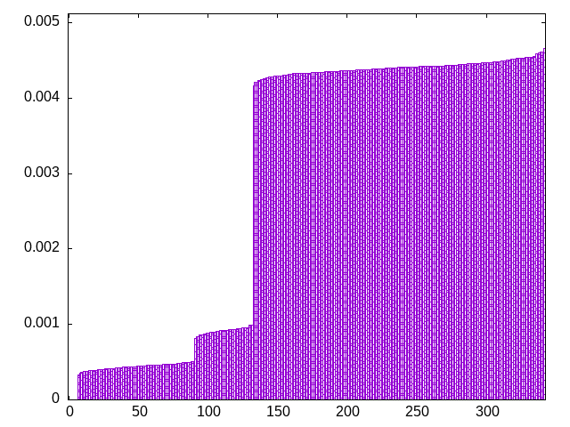
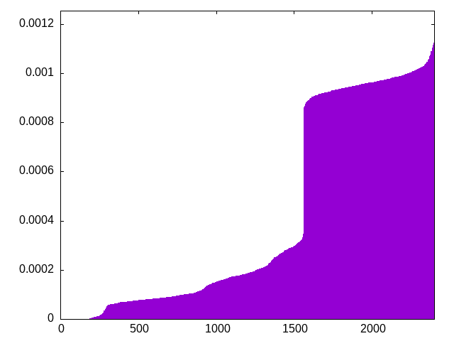
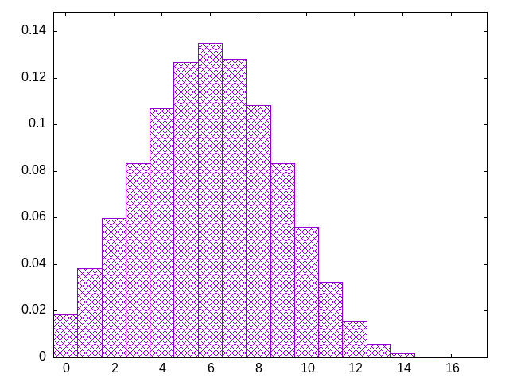
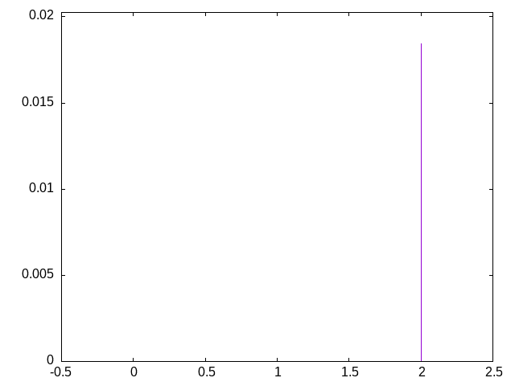

start with a fixed sequence, and shift the pieces randomly
tljiosijzslzjtosiotlztjszilojtsiljoizltsjozlositztjlioslzjotisijztsloztjlilstojzoizjsloitsjtzisloijzslztlojtsiozjiljtzssoltioizjlotzsltijzosjtzlislostjiiotjzlzsjlosoitlztjisjotzzioljsiltzjoslitzosjitlszoiojtzlsjtzsilloijtszoljosiitjztosltjszilioltzjjsiozsltolizjsiltjzotozslisjztjositlozisjtojlilszztojitzlsojlisztojolsitzstiljzjilotozjsiotlszjlotsijloiztsjzisltzjotlzijosliotszljijiostzlstozjoiltzjsitsilzojolstzltijzjsolsioitzjszliojtltozsjistloislzjjtzotilozsljsiojtlitzzsoisjltoztjioslijlzztijostslzolstjizoitjlsltoizzjsiojtlzosjilsotziojtjsllizsotzijostlijzlzsjtotsoiliztljoszjlistozijzoltjstsjizltoszloiljtisozjtlijsotzslijitozlojslztjizoistlsojzitlsotijzzlsolisjtzoijstzjlosiltizjtoslzojlsitoizsojltjizlztotsslijzojtiszljioltszojitlozjsiltslozojitslzijostzjoislltjstzizlojiosztjolitzsjoiltszjlistzolisjztjoisltjziolsotijzlsotjzistlozijlojtszitlszjoiolsjtzitzlisojlotsjzsloitiljtzsjotzsolijzsiztliojslotjzlizstojtilosljszotizjzljitoislstotjzloisjiloztszjtilozsjoilstjtzsiljozstiziljlotszolsijtj
bagginess: 0.1414
bagginess6: 0.7375
distribution1_maxgap: 1.000000000001e-06
distribution2_maxgap: 0.02040902040902041
distribution3_maxgap: 0.0031900063800127595
distribution4_maxgap: 0.000507001521004563
diversity: 5.9
entropy: 10.477
evenness_diff: 5.812
evenness_same: 4.068
maxdrought: 16.4
maxflood: 2
peakdrought: 6.0
repchance: 0.0184
seq4_coverage: 0.9259
seq4_follow: 7.782
distribution3_graph:

distribution4_graph:

drought_graph:

flood_graph:

similarity: (lower is more similar)
| 0.010 | bag_pure |
| 0.010 | bag |
| 0.047 | weight_exp |
| 0.054 | tgm |
| 0.068 | weight |
| 0.069 | tgm_pure |
| 0.073 | weight_exp_pure |
| 0.100 | ti |
| 0.108 | tgm_tap |
| 0.113 | tgm_tap_pure |
| 0.121 | seamless_bag_pure |
| 0.139 | weight2 |
| 0.170 | deepbag_window4 |
| 0.182 | weight_lin_pure |
| 0.187 | balanced5 |
| 0.192 | seamless_deep_pure |
| 0.205 | wet2 |
| 0.308 | deepbag_fixed4 |
| 0.324 | bag2 |
| 0.331 | shift7 |
| 0.360 | deepbag_fixed7 |
| 0.494 | wet_pure |
| 0.504 | seamless_bag2_pure |
| 0.566 | deepbag_window7 |
| 0.605 | balanced7 |
| 0.635 | nes_pure |
| 0.638 | shift10_5 |
| 0.649 | bag3 |
| 0.655 | seamless_bag3_pure |
| 0.673 | deepbag_fixed10 |
| 0.674 | deepbag_window10 |
| 0.689 | wet |
| 0.690 | nes |
| 0.698 | balanced9 |
| 0.720 | shift14 |
| 0.731 | bag4 |
| 0.793 | balanced_long_add_pure |
| 0.795 | shift21 |
| 0.840 | balanced_long_mul_pure |
| 1.101 | fullrandom_pure |
| 1.106 | fullrandom |
| 1.503 | shift1_75 |
| 3.166 | repeat_recent_pure |
| 5.264 | repeat_last_pure |
| 6.895 | flatbag |
| 6.895 | flatbag_pure |